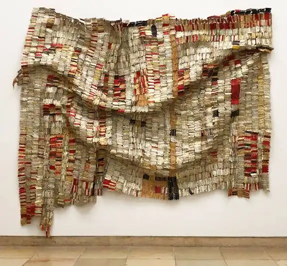
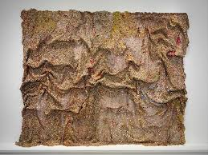
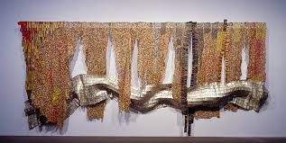
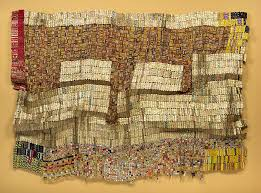

Ghana · Nigeria · International
El Anatsui
Sculptor & Installation Artist
Working from his studio in Nsukka, Nigeria, El Anatsui transforms thousands of discarded bottle caps and aluminium scraps into vast, shimmering tapestries that hang like cloth but carry the weight of colonial history, consumption, and the ingenuity of African making.
Featured work
Artist in His Own Words

Artist Interview
El Anatsui — On Art, Play, and the Nomadic Aesthetic
Interview Transcript
El Anatsui: Art is about play. We are more honest when we are playing. Even if I'm too serious, I don't think anything comes out.
The more freedom you have to play, the better it is for you. If art is about life, then life is not a fixed thing. The artwork should be in a form that is capable of changing itself.
People do react to my works. Most times I get letters from people after they've seen my works — they make sure they get my address somewhere — that the works have moved them. And I think that art is about communication. It's not something that you do and it's for you alone. When you exhibit, you have come out.
I think it's difficult to talk about work when it is very fresh. You're still digesting. Like behind me — Earth Shedding Its Skin. In Ghana, we have this practice whereby people do illegal mining and they so destroy the earth. I have a feeling that the earth is losing its skin.
My studio is in a rural setting and therefore it's possible to get people who would be willing to volunteer to come and help. On a good day, there could be up to 40. It could be cutting and joining into a straight line, or taking a colour and keep going. And then at the end, I put it together and we have something showing up.
Initially as an artist, I thought that I should be the one doing everything. Cathedrals weren't built by the architects. Since I'm working with forms which are not fixed, you want to give them scope to be able to do more things. If it's small, there's very little scope. But on this scale, this can contract into a small area and it's a different feel. The individuality of each piece is lost. And it's subjected now to the generality of a bigger form.
You can fold it. They travel very easily and can fold like a regular cloth and go into a small box and travel. And they are very lightweight. That's something I've worked with — the idea of the nomadic aesthetic. You let the fact that you need the work to be light and transportable be your challenge.
For a long time, it's been an uphill task for the rest of the world to believe that art happens everywhere. Some time ago it was like, okay, art is only in Europe in the West. The whole world has woken up. Time has opened up. Then there is need for artists from those places to also come and show what richness the world has — which has been shut out for a long time.
What I would advise a young artist is just to do it. The golden rule is there are no rules. As an artist, I think your worth is determined by how you can operate without rules.
Artist Statement
I am interested in the way that materials carry meaning. When I collect bottle caps from the sides of roads in Nsukka, I am not just collecting metal. I am collecting the trace of exchange — of things sold, consumed, and discarded. These caps come from bottles of schnapps and whisky, spirits that were traded across this continent for centuries, first as currency, then as commodity.
"I want the work to be free. Not fixed. The same piece will look different depending on how it is installed — who hangs it, how it falls, what light finds it."
My works are not woven — they are wired. Each cap is pierced and linked by hand, by my assistants and by me. The process is slow and repetitive, like weaving, like beading. It is labour that makes itself visible in the finished work. You can see the individual decisions, the slight variations in colour and alignment that mean no two metres of the surface are identical.
On cloth and memory
In Ghana and across West Africa, cloth is not decoration. It is record. The patterns of Kente carry names, proverbs, histories. When I make something that looks like cloth but is made of metal — of industrial waste — I am asking what happens to those records when the materials change. What do we remember? What do we discard?
I do not always know what a work means before I make it. The meaning arrives in the making, and then again in the hanging, and again in the looking. That is what I want from a work of art: that it stays open. That it gives back something different each time.
Selected Works

Dusasa II
2007
Aluminium bottle caps, copper wire — 390 × 490 cm. Concentric rings of flattened metal caps in warm reds and golds expand outward from a dark centre, suggesting both a shield and a sun.

Strips of Earth's Skin
2003
Aluminium bottle caps, copper wire — 213 × 305 cm. Horizontal bands of terracotta, ochre, forest green, and sandy beige run the width of the work, referencing woven cloth and the stratified layers of soil.

Between Earth and Heaven
2006
Aluminium bottle caps, copper wire — 610 × 490 cm. Diagonal sweeps of colour carry the eye from bottom-left to top-right, as if the work is in motion — falling, or rising. Individual glinting caps catch light like stars.